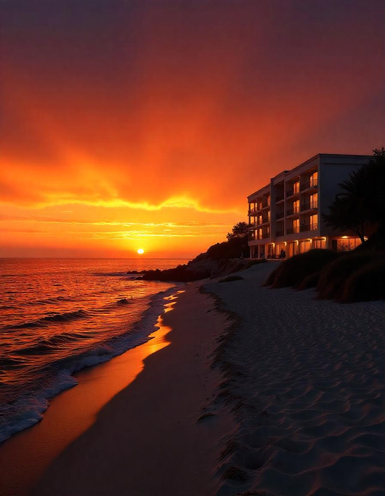

Mirazul es un hotel único que se encuentra ubicado en una zona privilegiada, ofreciendo a sus huéspedes una experiencia inigualable de descanso y confort. Este establecimiento se destaca por su impresionante vista al mar, que permite disfrutar de la tranquilidad y belleza del océano en todo momento. Con un diseño moderno y elegante, Mirazul está pensado para aquellos que buscan escapar del bullicio de la ciudad y conectar con la naturaleza.
El hotel ofrece diversas comodidades, como habitaciones espaciosas y bien equipadas, además de contar con un excelente servicio personalizado que hace sentir a cada visitante como en casa. Los huéspedes pueden relajarse en sus áreas comunes, disfrutar de la piscina con vista al mar, o deleitarse con una oferta gastronómica que resalta lo mejor de la cocina local e internacional. Además, se organizan actividades recreativas y excursiones que permiten explorar los alrededores, siempre manteniendo el enfoque en la relajación y el disfrute.
Mirazul no solo es ideal para unas vacaciones de descanso, sino también para aquellos que buscan eventos y celebraciones especiales, como bodas o retiros corporativos, aprovechando su ubicación espectacular y sus instalaciones de primer nivel. En resumen, es un refugio perfecto para quienes desean desconectar de la rutina y sumergirse en la serenidad de la playa con una vista incomparable al mar.